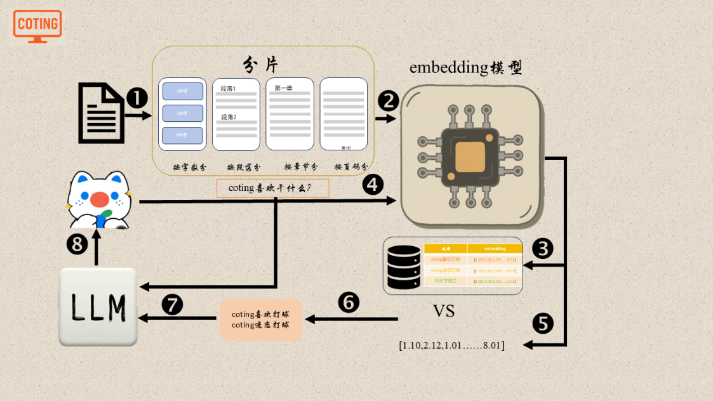

大模型幻觉问题
在使用大语言模型的过程中，人们很快会发现一个常见现象：模型有时会生成看起来非常合理、语气 自信，但实际上并不准确甚至完全错误的内容。这种现象通常被称为 大模型幻觉（Hallucination）。 所谓幻觉，并不是模型真的“产生幻觉”，而是指模型在缺乏真实信息或正确知识的情况下，依然生 成了一段看似可信的文本。
理解这一问题，需要先回到大语言模型的基本工作原理。大语言模型的核心任务是根据上下文预测下 一个最可能出现的 Token。在训练阶段，模型通过海量文本学习语言模式、语义关系以及常见知识分 布，但模型本质上并不是一个数据库，它并不会在推理时主动检索真实世界的知识，而是根据统计规 律生成最可能的表达方式。因此，当问题涉及到模型训练数据中较少出现的信息、需要精确事实的内 容，或者上下文信息不足时，模型就可能生成并不存在的事实。
幻觉通常可以表现为多种不同形式。最常见的一种是事实性错误，例如模型可能会给出不存在的论 文、虚构的作者、错误的统计数据或不准确的历史事件。另一种情况是引用幻觉，模型在回答问题时 会生成看起来非常正规的参考文献或链接，但这些文献实际上并不存在。此外，在复杂推理任务中， 模型还可能产生逻辑幻觉，即推理过程表面上连贯，但中间某些关键步骤并不成立。
造成幻觉的原因是多方面的。首先，大语言模型的训练目标通常是最大化下一个 Token 的预测概率， 而不是验证事实是否真实。因此，只要某种表达在语言上看起来合理，模型就有可能生成出来。其 次，模型在推理时通常只依赖当前输入的上下文，如果上下文中缺乏足够的信息，模型就会根据已有 的语言模式进行“补全”，从而产生不准确的内容。另外，训练数据中本身也可能包含错误或不一致 的信息，这也会影响模型生成结果的可靠性。
在实际应用中，大模型幻觉是限制其在一些关键场景中使用的重要因素。例如，在医疗、金融、法律 等领域，信息的准确性非常重要，如果模型生成错误的结论，可能会带来严重后果。因此，在这些高 风险场景中，通常需要通过额外的技术手段来降低幻觉的发生概率。
目前常见的解决方法之一是 检索增强生成（Retrieval-Augmented Generation, RAG）。这种方法 在模型生成回答之前，先从外部知识库或数据库中检索相关信息，然后将这些信息作为上下文输入给 模型。这样模型在生成内容时就不再完全依赖自身参数中的知识，而是可以基于真实文档进行回答， 从而显著降低幻觉问题。

另一种重要方法是 工具调用（Tool Use）。在这种模式下，大模型可以在回答问题时调用外部系统， 例如搜索引擎、数据库查询接口或计算工具。通过将复杂任务交给专门的工具处理，模型只负责理解 问题和组织语言表达，从而减少因知识不足而产生的错误。
此外，一些研究还通过 指令微调（Instruction Tuning） 和 人类反馈强化学习（RLHF） 来改善模型 的行为，使模型在不确定时更倾向于表达“不知道”或提示信息不足，而不是生成虚构内容。这种训 练方式可以在一定程度上降低模型过度自信的倾向。
总体来看，大模型幻觉并不是简单的技术缺陷，而是由语言模型的训练目标和生成机制共同导致的自 然结果。随着检索增强、工具调用以及更先进的训练方法不断发展，大模型的可靠性正在逐步提升。 不过，在设计和部署大模型系统时，开发者仍然需要充分认识到幻觉问题的存在，并通过系统架构和 工程方法来降低其影响。